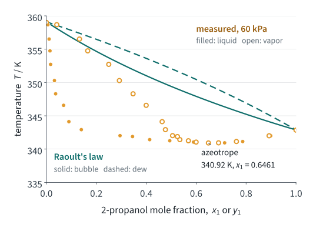
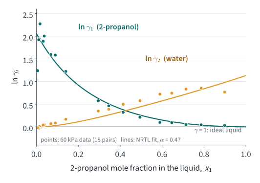
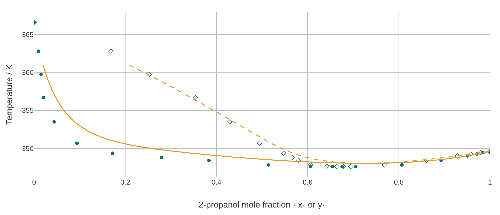
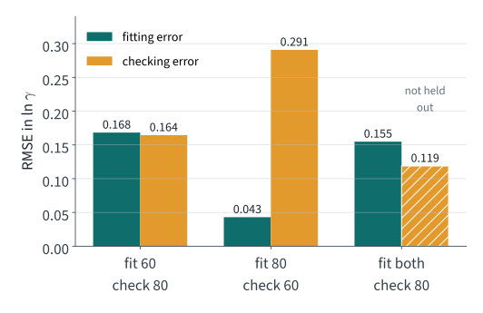

Session 2 of 7 · 180 minutes
Before the midterm Equations of state Fugacity and chemical potential Solution thermodynamics
After the midterm · 7 sessions 1 · VLE and flash 2 · Experimental VLE and consistency 3 · Liquid stability and LLE 4 · Solids and adsorption 5 · Chemical equilibrium 6 · Electrochemical equilibrium 7 · Choosing a model from evidence
Session 1 used an ideal liquid. Today we take measured data for a real mixture, infer how far it is from ideal, fit a model, and test whether that model can be trusted.

2-Propanol + water at 60 kPa, measured by Barbieri et al. (2024).
The mixture boils up to 13 K lower than Raoult’s law predicts, and it has a minimum-boiling azeotrope near x₁ = 0.65.
A column designed with Raoult’s law would promise a pure product that simple distillation cannot make.
Data: Barbieri, De Guido and Moioli, J. Chem. Thermodyn. 198 (2024) 107342, Table 4. Lab 02 uses the same data.
Session 1 Ideal liquid, Raoult’s law.
y_iP=x_iP_i^{\text{sat}}
Today Keep the ideal vapor, let the liquid be real.
y_iP=x_i\gamma_iP_i^{\text{sat}}
From the first half γi measures the departure of component i from an ideal solution, relative to its pure liquid.
Every quantity except γ is measured or comes from a vapor-pressure correlation, so one measured state gives γ₁ and γ₂.
Where you show it
0–30 Essential concepts γ from data, NRTL, fit and check
30–40 Activity 1 the azeotrope
40–60 Demo Lab 02
60–70 Break
70–140 Activity 2 · pair investigation Lab 02: γ by hand, three fits
140–180 Discussion and exit ticket consistency, the session question
Session question When a model fits measured VLE data well, what does that prove, and what does it not?
Before class · 15–20 min Read the note on activity coefficients. Bring one question.
After class · 30–40 min Finish the three Lab 02 fits and submit the study file with your name and ID.
Studying on your own? Follow the same order. Turn on narration or captions at the bottom left, and pause at each activity slide.
Solve the modified Raoult’s law for γ:
\gamma_1=\frac{y_1P}{x_1P_1^{\text{sat}}(T)}\qquad\gamma_2=\frac{y_2P}{x_2P_2^{\text{sat}}(T)}
Psat is evaluated at the measured T of that row, from the Antoine equation:
\log_{10}\frac{P^{\text{sat}}}{\text{bar}}=A-\frac{B}{T+C}
Assumptions behind each γ:
At a pure endpoint the absent component gives 0/0, so those rows carry no γ.
1 · Read the row T = 341.25 K, P = 60 kPa
x₁ = 0.4943, y₁ = 0.569
2 · Psat at 341.25 K 2-propanol: 55.853 kPa
water: 28.703 kPa
3 · γ₁ (0.569 × 60) / (0.4943 × 55.853)
= 1.237
4 · γ₂ (0.431 × 60) / (0.5057 × 28.703)
= 1.782
Both exceed 1: each component escapes to the vapor more readily than in an ideal solution. For fitting we use ln γ₁ = 0.212 and ln γ₂ = 0.578.
Antoine constants: NIST WebBook; 2-propanol A = 4.8610, B = 1357.427, C = −75.814; water A = 5.0768, B = 1659.793, C = −45.854; common range 334–362.41 K.

Positive deviation ln γ > 0 for both components at every composition. Unlike pairs (2-propanol with water) attract less than like pairs.
Largest when dilute ln γ₁ reaches about 2 as x₁ → 0, so γ₁ ≈ 8: a little 2-propanol in water is very volatile.
Azeotrope Where yi = xi:
\frac{\gamma_1}{\gamma_2}=\frac{P_2^{\text{sat}}}{P_1^{\text{sat}}}
\ln\gamma_1=x_2^2\left[\tau_{21}\Big(\frac{G_{21}}{x_1+x_2G_{21}}\Big)^2+\frac{\tau_{12}G_{12}}{(x_2+x_1G_{12})^2}\right]
G_{ij}=\exp(-\alpha\,\tau_{ij})
ln γ₂ follows by swapping 1 and 2. With α fixed at 0.47 (from the article), two parameters τ₁₂ and τ₂₁ are fitted.
What “fit” means here
Choose τ₁₂, τ₂₁ to minimize the root-mean-square difference between model and measured ln γ:
\text{RMSE}=\sqrt{\frac{\sum_j (r_{1,j}^2+r_{2,j}^2)}{2N}}
r = model ln γ − measured ln γ; N usable pairs.
The data come at two pressures: 60 kPa (18 usable pairs) and 80 kPa (17 usable pairs).
The checking error tells you how far you can trust the model away from its own data.
A fitting error alone can always be made small by adding parameters.
A checking error on held-out data is the honest test of a model.
This is the same idea as training and test data in machine learning.
Activity 1 · 10 minutes · alone, then with a partner
Row 5 at 60 kPa is the azeotrope: T = 340.92 K, x₁ = 0.6461, y₁ = 0.6492. Is γ₁/γ₂ greater or less than 1, and roughly how large?
At 340.92 K: P₁sat = 55.04 kPa and P₂sat = 28.29 kPa.
Use the azeotrope condition, not a full calculation. Then compare with your partner.
On your own: pause here, write your answer, then go to the next slide.
At the azeotrope yi = xi, so γ₁P₁sat = γ₂P₂sat:
\frac{\gamma_1}{\gamma_2}=\frac{28.29}{55.04}=0.514
From the measured row: γ₁ = 1.095 and γ₂ = 2.102, so γ₁/γ₂ = 0.521.
Less than 1. Water is the less volatile component, so it needs the larger γ to reach the same partial pressure.
The two ratios differ by about 1%: y₁ and x₁ are close but not equal at the measured point.
Simple distillation cannot cross this composition.

Lab 02 should report τ₁₂ = 0.3618 · τ₂₁ = 1.7524 · fitting RMSE 0.168 (18 pairs) · checking RMSE 0.164 (17 pairs)
Psat at the wrong temperature. Each row has its own measured T. Evaluate both Psat there, not at one fixed T.
Using the pure-component rows. At x₁ = 0 or 1 the absent component gives 0/0. Those rows cannot enter the fit.
Refitting before checking. If you refit at the checking pressure, there is nothing left to check.
Reading a small fitting error as proof. It shows the model can follow these points, not that the data or the model are right elsewhere.
Next Activity 2: a pair investigation in Lab 02, 70 minutes.
Before you leave your seat, check that Lab 02 opens on your device.
Activity 2 · 70 minutes · in pairs: one drives Lab 02, one checks by hand, then swap
15 min · γ by hand Pick any interior row other than row 7. Calculate Psat, γ₁ and γ₂ by hand. Check with the lab.
20 min · three fits Fit 60 → check 80. Fit 80 → check 60. Fit both. Save each as a case.
20 min · compare Record the fitting and checking errors. Which fit transfers best? Which data set scatters more?
15 min · explain Write two sentences, with numbers, answering the session question. Download the study file with your names and IDs.
On your own: do both roles yourself. Pause the slides, work in Lab 02, then continue.
Graduate extension Open Lab 03, load case D (measured 60 kPa data) and run the diagnostics. Explain why the tests report “not applicable” or “not assessed” rather than pass or fail.
Check your Lab 02 results · RMSE in ln γ
| Fit | τ₁₂ | τ₂₁ | fit | check |
|---|---|---|---|---|
| 60 → 80 | 0.362 | 1.752 | 0.168 | 0.164 |
| 80 → 60 | 0.354 | 2.417 | 0.043 | 0.291 |
| both | 0.364 | 1.937 | 0.155 | — |

Discuss in pairs, then with the class
Gibbs–Duhem links the two activity coefficients at constant T and P:
x_1\,d\ln\gamma_1+x_2\,d\ln\gamma_2=0
For isothermal data this gives the area test:
\int_0^1\ln\frac{\gamma_1}{\gamma_2}\,dx_1=0
Isobaric data need an extra term with the excess enthalpy HE.
Lab 03 on the measured 60 kPa data
Area test: not applicable, the path is isobaric.
Herington: not assessed, no endpoint estimates.
Local test: not assessed, HE is not available.
“Not assessed” is not “inconsistent”. It means the data do not carry what the test needs.
γ from data γi = yiP / (xiPisat), with Psat at each measured T.
Model NRTL with α fixed: two τ values fitted to ln γ by RMSE.
Trust Judge a model by its checking error on data it has not seen.
Session question: a good fit shows that the model can follow the points it was given. It does not show that the model transfers to other conditions, or that the data are thermodynamically consistent. Fitting 80 kPa gave 0.043 on its own data and 0.291 at 60 kPa.
Next session When one liquid splits into two: phase stability and LLE (Labs 04 and 05).
Exit ticket and feedback · alone · 5 minutes · anonymous
A model fitted to 80 kPa data has a fitting error of 0.043 but a checking error of 0.291 at 60 kPa. What does this tell you, and what would you do next?
Scan the code or open the link. The same form asks three short questions about today: pace, confidence and whether the lab worked.
No name or student ID is recorded. Wait for “Response received.”
Hand in · this week Your Lab 02 study file with the three fits, name and student ID.
Prepare · Session 3 Read the note on Gibbs energy of mixing and phase stability. About 20 minutes.
Optional · graduate Run Lab 03 on the measured data and add your explanation to the study file.